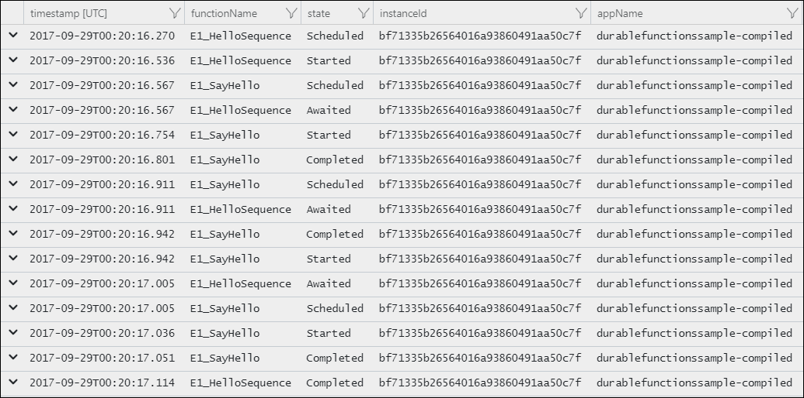
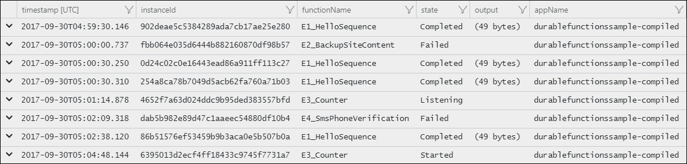

Warning
This documentation is out of date and will be deleted. The official documentation has been moved here.
Diagnostics
There are several options for diagnosing issues with Durable Functions. Some of these options are the same for regular functions and some of them are unique to Durable Functions. This article goes into detail about what options are available.
Application Insights
Application Insights is the recommended way to do diagnostics and monitoring in Azure Functions. The same applies to Durable Functions. For an overview of how to leverage Application Insights in your function app, see the Functions Monitoring topic of the Azure Functions documentation.
The Azure Functions Durable Extension also emits tracking events which allow you to trace the end-to-end execution of an orchestration. These can be found and queried using the Application Insights Analytics tool in the Azure Portal.
Tracking Data
Each lifecycle event of an orchestration instance will cause a tracking event to be written to the traces collection in Application Insights. This event contains a customDimensions payload with several useful fields (all prepended with prop__):
- hubName: The name of the task hub in which your orchestrations are running.
- appName: The name of the function app. This is useful when you have multiple function apps sharing the same Application Insights instance.
- slotName: The deployment slot in which the current function app is running. This is useful when you leverage deployment slots to version your orchestrations.
- functionName: The name of the orchestrator or activity function.
- functionType: The type of the function - e.g. Orchestrator or Activity.
- instanceId: The unique ID of the orchestration instance.
- state: The lifecycle execution state of the instance. Valid values include:
- Scheduled: The function was scheduled for execution but hasn't started running yet.
- Started: The function has started running but has not yet awaited or completed.
- Awaited: The orchestrator has scheduled some work and is waiting for it to complete.
- Listening: The orchestrator is listening for an external event notification.
- Completed: The function has completed successfully.
- Failed: The function failed with an error.
- reason: Additional data associated with the tracking event. For example, if an instance is waiting for an external event notification, this field indicates the name of the event it is waiting for. If a function has failed, this will contain the error details.
- isReplay: Boolean value indicating whether the tracking event is for replayed execution.
- extensionVersion: The version of the Durable Task extension. This is especially important data when reporting possible bugs in the extension. Note that long running instances may report multiple versions if an update occurs while it is running.
The verbosity of tracking data emitted to Application Insights can be configured in the logger section of the host.json file.
{
"logger": {
"categoryFilter": {
"categoryLevels": {
"Host.Triggers.DurableTask": "Information"
}
}
}
}
By default, all tracking events are emitted. The volume of data can be reduced by setting Host.Triggers.DurableTask to "Warning" or "Error" in which case tracking events will only be emitted for exceptional situations.
Warning
By default, Application Insights telemetry is sampled by the Azure Functions runtime to avoid emitting data too frequently. This can cause tracking information to be lost when many lifecycle events occur in a short period of time. See the Configure sampling section of the Azure Functions Monitoring topic to learn how this behavior can be configured.
Single Instance Query
Below is query showing the historical tracking data for a single instance of the Hello Sequence function orchestration. It's written using the Application Insights Query Language (AIQL). Note that it filters out replay execution so that only the logical execution path is shown.
let targetInstanceId = "bf71335b26564016a93860491aa50c7f";
let start = datetime(2017-09-29T00:00:00);
traces
| where timestamp > start and timestamp < start + 30m
| where customDimensions.Category == "Host.Triggers.DurableTask"
| extend functionName = customDimensions["prop__functionName"]
| extend instanceId = customDimensions["prop__instanceId"]
| extend state = customDimensions["prop__state"]
| extend isReplay = tobool(tolower(customDimensions["prop__isReplay"]))
| where isReplay == false
| where instanceId == targetInstanceId
| project timestamp, functionName, state, instanceId, appName = cloud_RoleName
The result is a list of tracking events that show the execution path of the orchestration, including any activity functions.

Note
Some of these tracking events may be out of order due to the lack of precision in the timestamp column. This is being tracked in GitHub as issue #71.
Instance Summary Query
The following query can be used to query the status of all orchestration instances that were run in a specified time range.
let start = datetime(2017-09-30T04:30:00);
traces
| where timestamp > start and timestamp < start + 1h
| where customDimensions.Category == "Host.Triggers.DurableTask"
| extend functionName = tostring(customDimensions["prop__functionName"])
| extend instanceId = tostring(customDimensions["prop__instanceId"])
| extend state = tostring(customDimensions["prop__state"])
| extend isReplay = tobool(tolower(customDimensions["prop__isReplay"]))
| extend output = tostring(customDimensions["prop__output"])
| where isReplay == false
| summarize arg_max(timestamp, *) by instanceId
| project timestamp, instanceId, functionName, state, output, appName = cloud_RoleName
| order by timestamp asc
The result is a list of instance IDs and their current runtime status.

Logging
It's important to keep the orchestrator replay behavior in mind when writing logs directly from the orchestrator function. For example, consider the following orchestrator function:
public static async Task Run(
DurableOrchestrationContext ctx,
TraceWriter log)
{
log.Info("Calling F1.");
await ctx.CallActivityAsync("F1");
log.Info("Calling F2.");
await ctx.CallActivityAsync("F2");
log.Info("Calling F3");
await ctx.CallActivityAsync("F3");
log.Info("Done!");
}
The resulting log data is going to look something like the following:
Calling F1.
Calling F1.
Calling F2.
Calling F1.
Calling F2.
Calling F3.
Calling F1.
Calling F2.
Calling F3.
Done!
Note
Remember that while the logs claim to be calling F1, F2, and F3, those functions are only actually called the first time they are encountered. Subsequent calls that happen during replay are skipped and the outputs are replayed to the orchestrator logic.
If you want to only log on non-replay execution, you can write a conditional expression to log only if IsReplaying is equal to false. Consider the example above, but this time with replay checks.
public static async Task Run(
DurableOrchestrationContext ctx,
TraceWriter log)
{
if (!ctx.IsReplaying) log.Info("Calling F1.");
await ctx.CallActivityAsync("F1");
if (!ctx.IsReplaying) log.Info("Calling F2.");
await ctx.CallActivityAsync("F2");
if (!ctx.IsReplaying) log.Info("Calling F3");
await ctx.CallActivityAsync("F3");
log.Info("Done!");
}
With this change, the log output is as follows:
Calling F1.
Calling F2.
Calling F3.
Done!
Debugging
Azure Functions supports debugging function code directly and that same support carries forward to Durable Functions, whether running in Azure or locally. However, there are a few behaviors to be aware of when debugging:
- Replay: Orchestrator functions regularly replay when new inputs are received. This means a single logical execution of an orchestrator function can result in hitting the same breakpoint multiple times, especially if it is set early in the function code.
- Await: Whenever an
awaitis encountered, it yields control back to the Durable Task Framework dispatcher. If this is the first time a particularawaithas been encountered, the associated task is never resumed. Because the task never resumes, stepping over the await (e.g. F10 in Visual Studio) is not actually possible. Stepping over only works when a task is being replayed. - Messaging Timeouts: Durable Functions internally uses queue messages to drive execution of both orchestrator functions and activity functions. In a multi-VM environment, breaking into the debugging for extended periods of time could cause a another VM to pick up the message, resulting in duplicate execution. This behavior exists for regular queue-trigger functions as well, but is important to point out in this context since the queues are an implementation detail.
Tip
When setting breakpoints, if you want to only break on non-replay execution, you can set a conditional breakpoint which breaks only if IsReplaying is equal to false.
Storage
By default Durable Functions stores state in Azure Storage. This means you can inspect the state of your orchestrations using tools such as Microsoft Azure Storage Explorer.

This is useful for debugging because you see exactly what state an orchestration may be in. Messages in the queues can also be examined to learn what work is pending (or stuck in some cases).
Warning
While it's easy and convenient to see execution history in table storage, you should avoid taking any dependency on this table at this time as the specifics of its usage may change prior to the general availability of the Durable Functions extension.